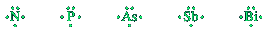

Lewis structure
In discussing the physical and chemical properties on an element, chemists often focus on the outermosto shell of its atoms, because electrons in this shell are the ones involved in the formation of chemical bonds and in chemical reazction. We call outer-shell electron valence electrons, and we call the energy level in which they are found the valence shell. Carbon, for example, with a ground-state electron configuration of 1s22s22p2, has four valence (outer-shell) electrons.
To show the outermos electrons of an atom, we commonly use a representation called a Lewis structure, after the American chemist Gilbert N. Lewis (1875-1946), who devised this notation. A Lewis structure shows the symbol of the elemtn, surrounded by a number of dots equal to the number of electrons in the outer shell of an atom of that element. In Lewis structures, the atomic symbolo represente the nucleus and all filled inner shells.
Other representative examples are:
Li⋅ ⋅Be⋅
⋅ ⋅B⋅
Quando sono presenti più di 4 elettroni esterni, i puntini corrispondenti sono accoppiati a quell già presenti.
Note that elements in the same group have the same number of valence electrons and therefore simimal Lewis dot symbols.
Cations have no valence electrons and so are shown with no dots.
[Ca]2+, [Al]3+
While the Lewis dot symbols for sulfur anion is